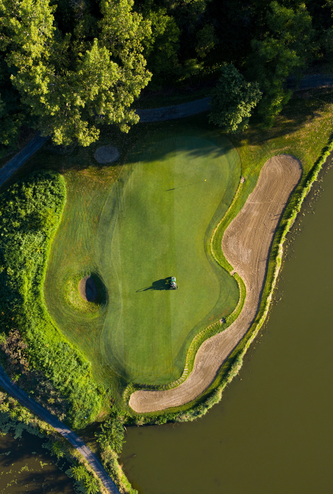

EAT. DRINK. PLAY.
WELCOME TO Prodaturu Golf Club!
Prodaturu Golf Club is a multipurpose golf facility located in Heilbronn, Germany. Passionate about technology, player development and making golf fun and accessible to everyone.
TOPTRACER RANGE
GOLF LESSONS
ADVENTURE GOLF
COFFEE SHOP
LEAGUES
TOPTRACER RANGE
GOLF LESSONS
ADVENTURE GOLF
COFFEE SHOP
LEAGUES


ABOUT US
Home to a 46-bay, multi-tier, floodlit driving range, powered by Toptracer Range technology. Complimented by a practice green and bunker, coffee shop and American Golf Store. There truly is something for everyone as we also boast two outdoor 18-hole dinosaur themed crazy golf courses.
Please Note: we are a cashless venue. The range closes at 10pm with last balls at 9pm.

SIGN UP FOR PRODATURU GOLF CLUB NEWS AND SPECIAL OFFERS
Pleasantly surprised to discover the mini golf is open until 10pm during weekdays üòä Always enjoy visit here, cafe does some nice goodies too üëçüèΩ